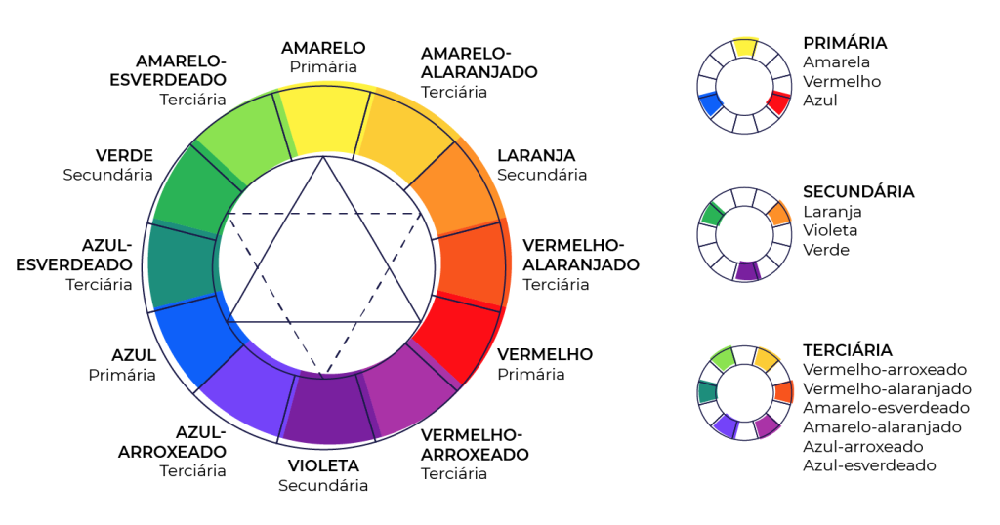

C |
Í |
R |
C |
U |
L |
O |
C |
R |
O |
M |
Á |
T |
I |
C |
O |
→ Para ilustrar visualmente os tipos de cores e suas classificações, foi criado um diagrama chamado círculo cromático.

O Círculo Cromático ou Círculo de Cores é composto por doze cores, sendo: Três são primárias (azul, amarelo e vermelho) Três são secundárias (verde, laranja e roxo)
Seis são terciárias (vermelho-arroxeado, vermelho-alaranjado, amarelo-esverdeado, amarelo-alaranjado, azul-arroxeado, azul-esverdeado)